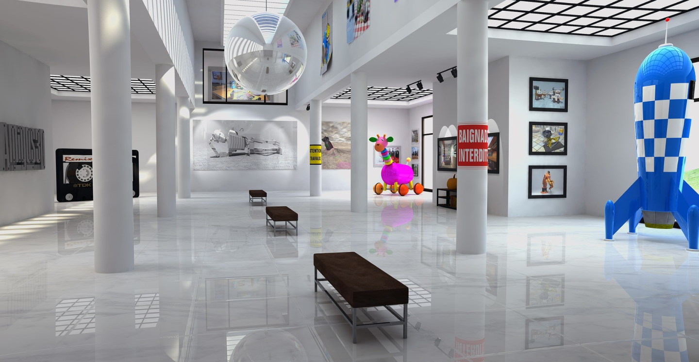

ABOUT COMMUNITY SCIENCE MUSEUM
Seeking captivating science presentations? Premier event spaces in our city? Engaging family activities?
Curious about our latest IMAX screenings? Interested in career opportunities with us?
Or perhaps you're curious about admission fees – it's all right at your fingertips.
Join us for an exploration of all we have to offer!

At the Museum of Science, we are passionate about sparking curiosity, nurturing a love for learning, and inspiring
the next generation of scientists, innovators, and explorers. Our mission is to make science accessible and exciting for visitors of
all ages.
Engaging Adventures for Young Explorers (Ages 7-15)
- Hands-On Laboratories: Dive into the world of experimentation and discovery in our hands-on laboratories designed just for young scientists. From exciting chemistry experiments to physics puzzles, these interactive spaces allow kids to become young scientists in action, all under the guidance of our expert educators.
- Science Shows: Don't miss our captivating science shows that blend entertainment and education, specially crafted to engage and inspire young minds. Witness mind-boggling experiments, dazzling demonstrations, and thought-provoking presentations that will leave kids in awe.
- Interactive Workshops: Join our passionate staff for interactive workshops that are both fun and educational. From robotics challenges to space adventures, these workshops offer a deeper dive into various scientific disciplines, encouraging curiosity and creativity.
- Planetarium Shows: Embark on a thrilling journey through the cosmos in our state-of-the-art planetarium, designed with young astronomers in mind. Be mesmerized by stunning visuals and immersive storytelling as kids explore the mysteries of the universe.
Explore Exhibits Now